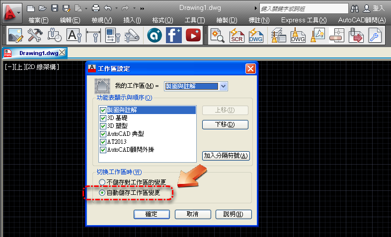

smiletcc 寫到:您好:
我使用的是AutoCAD 2012,每次若變換2D或3D製圖時, ACADAdviser總是會重新出現一遍,而且會佔據很多螢幕空間,應該是我不會設定吧,還是可以教我嗎？ 謝謝~
第一步可以先在您的「工作區」，把需要的工具列排列好。
然後輸入WSSETTINGS指令，開啟「工作區設定」→「切換工作區」→「自動儲存工作區變更」→「確定」
以後切會2D或3D「工作區」時，就不會重新出現「ACADAdviser」所有工具列。
